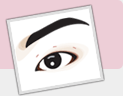
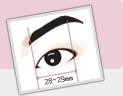
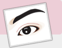
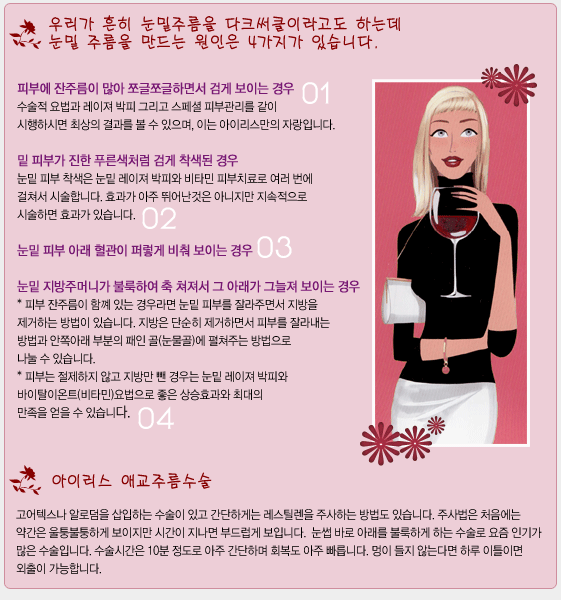
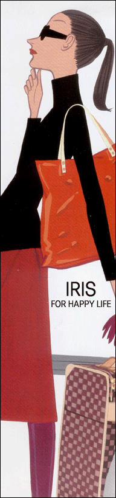

아이리스 성형외과에서 수 많은 고객분들을
상담하고 수술한 결과를 토대로 말씀 드리면 "
본인의 외모, 특히 얼굴(안면)에 대한 조화가 최대한 잘되며, 타인이 보았을 때 자연스러우면서
눈매가 이뻐 전체 얼굴이 화사하게 보이는 것이 젤로 이쁜 쌍꺼풀입니다"
수 많은 사람들이 쌍꺼풀수술을 하지만 크게
두가지 스타일로 압축할 수 있읍니다.
이는 서구인들에게 많은 형으로, 과거에는
우리 나라에서도 많이 시행한 방법으로 " 우아하고 서구적 이며,시원한 스타일"입니다.
눈이 작으신 분들께서 하 시면 왠지 안 어울리는 방법이기도 합니다.
최근 연예인들에게서 많이 볼 수 있는 스타일로
대체로 약간은 소극적이나 자연스럽고 한국인이 많이 선호하는 스타일이며 일상생활을 하시는
분, 또는 눈 화장을 많이 안하시는 분들께 어울리는 스타일입니다.
30대 미만이거나 직장인에게 우선 매몰법을 권합니다.
수술한 티가 매우 적고 회복이 빠르며 부기나 빨리 사라지고 풀릴 위험도 없습니다 매몰법은 눈을 감았을 떄도 수술 한 티가 매우 적고 회복이 빠르며
붓기나 빨리 사라지고 풀릴 위험도 없습니다.

눈꺼풀이
얇고 큰 눈. 한쪽만 쌍꺼풀이 있는 눈.
라인이 희미한 눈. 수술이 처음인 경우.
절개법과 비절개법의 절출법인 복합 매몰법이 가장 많이 시행되고 있습니다.
40대 이전이고 피부가 심하게 늘어지지 않았다면 누구나 복합매몰법을
하여 좋은 결과를 얻을 수 있습니다

앞트임(몽고주름제거술)
-- 흉터 안보이는 수술 크고
시원한 눈을 원하는 분이 많아지는 요즘 부쩍 많이 요구가 많아지는 추세입니다. 바깥
트임(뒷트임) 수술은
4mm이지만 시간이 지나면 2mm 정도로 약간 줄어들 수 있습니다.
그 효과는 단독으로 수술하기보다는 다른 몽고주름이나 쌍꺼풀 수술과 함께 병하면
더 좋은 효과를 얻으실 수 있습니다.
작은눈.
눈사이가 멀고 길이가 짧은 눈.
타병원에서 매몰법으로 풀린 경험이 있는 눈. 지방이나 근육이 있는 눈.
예전에는 가장 일반적이었던 방법으로 눈꺼풀 위에 원하는 높이와 모양대로 디자인을
한 후에 여분의 피부를 잘라내고, 근육과 지방을 알맞게 제거하고 상안 검거근육을
피부와 봉합하여 아름다운 눈매와 쌍꺼풀 라인을 만들어 주는 방법입니다.
라인의 모양은 In-fold 나 Out-fold 모두 가능하며 이외에도 동시에
눈꼬리의 높이나 눈매를 교정해줄 수 있습니다.
참고) 상기
도표는 아이리스를 방문한 수많은 환자분들의 수술을 토대로 만들어진 "나의
맞춤 쌍꺼풀수술" 도식입니다. 선택은 원장님과의 상담과 진찰로 최상의
결과를 위해 고객분과 함께 할 수 있음을 알려드립니다.

지방이나
근육이 아주 많은 눈. 눈꺼풀이 쳐진 눈. 안검하수가 있는 눈.
타병원에서 실패한 분. 진한 쌍꺼풀을 원하시는 분.
젊은 사람이 나이가 들어가면서 눈가의 주름이 많아지고 윗눈이 쳐져서 시야를
가 리게 되고, 아랫눈은 불룩하게 튀어나오면서 피부가 쳐지게 되는 일종의 노화
현상 을 맞이하게 됩니다. 이런 경우도 저희 아이리스에서는 젊고 눈매가 시원해
보이며, 한결 산뜻한 모습으로 바꾸어 드립니다.
쳐진 피부와 지방등은 일부 제거하면서 시술을 하게 되며 쌍꺼풀 수술과 거의
비슷 하게 진행하게 됩니다.

이런 경우를 의학용어로 첩모난생이란 속눈썹이 눈을 찔러 각막과 결막이 지속적으 로
자극되어 눈물이 나오고 햇빛에 나가면 눈이 부시게 되며 장기적으로는 시력에 지장을
줄수 있는 질환입니다. 한두개만의 속눈썹이 눈으로 향한는 경우와 속눈썹 의 일부분이
눈을 찌르는 경우에는 속눈썹을 뽑거나 모근제거술을 합니다만, 전체적으로 눈을 찌른느
경우 속 눈썹의 방향을 들어주는 변형된 쌍꺼풀 수술을합니다. 간단한 경우 복합매몰법으로
교정할수 있으며 아주 심한 경우는 절개법을 사용합니다.
눈이 쳐지는 원인은 신경, 근육, 물리적인요소등이 있습니다만, 선천적으로 눈을 뜨
는 근육이 약한경우와 나이가 들면서 늘어지는 경우로 볼 수 있습니다. 첫번째.
선천적으로 눈을 뜨는 근육이 약한경우 눈동자를 가리는 정도를 검사하여 동공이 가린
경우는 아이의 시력발달에 장애를 주기 때문에 조기에 수술해야 합니다.
눈동자를 가리지 않는 경우라도 눈을 뜨는 근육의 약화로 이마근육이 보상 작용을 하여
이마주름이 남보다 깊이 패이게 되므로 교정하는 것이 좋습니다.
안검 하수의 정도를 3단계로 나누어 교정 수술도 다르게 적용합니다. 근육을 짧게 하는
수술, 근육과 눈꺼풀을 현수하는 수술, 이마근육과 눈꺼풀을 연결해주는 수술이 있습니다. 두번째.
나이가 들면서 눈꺼풀의 피부가 늘어지고 근육이 눈꺼풀에서 이완되어 느슨해지는 경우가
생겨납니다.
늘어진 피부를 절제하고 이완된 눈을 뜨는 근육을 다시 재자리로 이동하여 봉합합니다.
일반적으로는 쌍꺼풀 수술과 흡사하다고 생각하셔도 됩니다.
수술 후 경과는 자연스러워지는데 시간이 다른 수술에 비해 더 소요 될 수 있습니다.
네. 잘 알겠습니다. 언제든지 궁금한게 있으시면 저희 홈페이지 상담란이나,
전화 (809-0021)를 주시면 성심성의껏 답변해 드리도록 하겠읍니다.
아래는, 자주 듣는 질문들을 발췌하였읍니다.

여름에 쌍꺼풀하면 안되나요?
여름에 성형 수술을 하면 수술이 덧난다고 하여 걱정하시는
분들이 많고 질문 도 많이 하십니다. 아무래도 여름은 날씨가 덥고 습하고 땀을 흘리기
때문에 수술 부위에 나쁜 영향을 주어 덧날 수 있고 상처 회복도 느리다고 예상하시는
것 같습니다. 여름에 하는 성형 수술은 단지 수술 당일 세안을 못하는 불 편함이 있을
뿐 수술 결과에는 아무런 영향을 미치지 않으며 요즘은 수술 그 다음날 세수를 하여도
무방한 방법들을 사용하고 있기 때문에 계절이 수술에 장애가 되지 않습니다. 또한 냉방시설이
잘되어 있기 때문에 더더욱이 고민하 실 필요가 없습니다.
여름에 수술한 분과 겨울에 수술한 분의 회복이나 수술 결과는 차이가 없습니다. 그러므로
계절적인 요인이 수술에 미치는 영향은 없으며 이보다 더욱 중요한 것은 수술이 자기
생활에 미치는 영향을 생각하는 것입니다.
수술하기에 가장 좋은 시기는 2-3 일 정도 여유롭게 휴식을 취할 수 있는 때 이기
때문에 학생의 경우 방학기간을 이용하시거나 직장인은 연휴 또는 휴가기 간을 선택하시는
것이 가장 좋습니다.
왜? 저는 연예인 눈처럼 안되나요?
연예인이든 보통 사람이든 자기 눈에 맞는 쌍꺼풀 선을 디자인
하는 게 가장 자연스럽고 남들이 보기에도 어색하지 않습니다.
작은 눈을 가진 사람이 쌍꺼풀을 크게 만든다고 눈이 커지지도 않으며, 연예인 누구
처럼 눈을 만든다해도 자기에게 어울리긴 힘들답니다. 가끔 직업적인 필요로 쌍꺼풀을
크게 만드는 분도 있지만, 화장이 없는 맨 얼굴에선 피로해 보이고 늙어보이는 인상을
주기 쉽답니다.
왜? 쌍꺼풀 수술을 했는데 눈이 안커지나요?
쌍꺼풀 수술은 실제 눈이 커지진 않습니다. 앞이나 뒤트임은
눈의 옆 길이를 길게 해주지만 쌍꺼풀이 생기면서 눈이 아래 위로 많이 커지진 않는답니다.
하지만 쌍꺼풀 선만큼 눈이 길어보이며, 눈매가 더욱 시원해지기에 눈이 커진 것처럼
보입니다.
안검하수 교정에 가까운 근육 수술을 할 경우 눈꺼풀이 눈을 덜 가리게 할수 있지만,
쌍꺼풀 크기가 작아지고 눈을 감는데 좀 불편함을 느낄 수도 있습니다.
앞트임하면 흉이 많이 안나나요?
여기에 대한 답변은 " 예! 그렇습니다"
라고 먼저 말씀을 드립니다.
왜냐하면 앞트임을 많이 하면 할 수록 흉이 많이 납니다. 그리고 이 흉은 시간 이
갈수록 좋아진다는 보장이 없습니다. 일단 너무 많이 해서 흉이 많이 보여 도 다시
되돌아 갈수는 없습니다.
그렇기에 저희 아이리스에서는 충분히 앞을 트면서도 흉이 거의 나지 않는 방법으로 시행을
합니다.
혹시나 조금 모자라면 일부 교정을 충분히 할 수 있으므로 안전하고 효과적인 방법이라
생각됩니다.
나이가 들어 어른이 되면 쌍꺼풀이 생기나요?
어릴때 쌍꺼풀을 계속 그려주거나 억지로 라인을 만들어 준다고,
어른이 되어 없던 쌍꺼풀이 생기진 않습니다. 가끔 나이가 들면서 생기는 분들은 쌍꺼풀이
생길 수 있는 유전적 해부학적 소인을 가지고 있다가, 나이가 들면서 피부의 탄력이
줄어들게 되면 눈을 뜨는 근육과 피부사이의 연결이 두드러지게 되어 쌍꺼풀이 생기는것입니다.
또 나이가 많이 들면 피부가 쳐지며 접혀서 대개는 아웃 폴드로 쌍꺼풀이 생기기도 합니다.
똑같은 날 수술했는데 저는 친구처럼 쌍꺼풀이 어울리지 않나요?
그에 대한 대답은 한마디로 "개인차" 라고 말씀을 드리고 싶네요!
사람마다 생김새나 피부, 그리고 부속기관이 다릅니다. 그에 따라 똑같은 수술법으로
한다고 하더라도 전부 똑같을 수는 없다는 얘기죠. 저희 아이리스에서는 항상 변함없는
정성과 치료로 최고의 결과를 위해서 항상 최선을 다하고 있습니다.